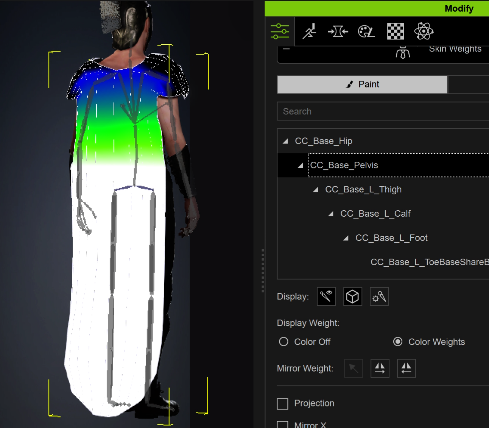
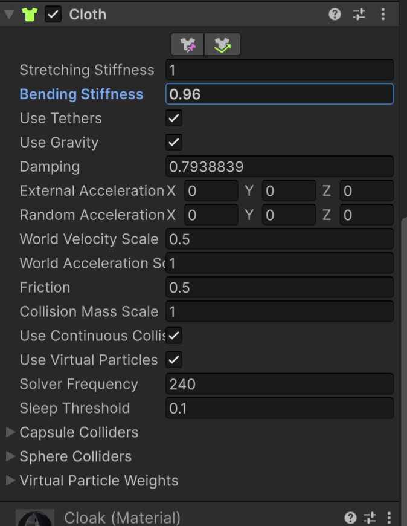

Application-level validation
The system was designed to keep working while the user changed animation states, camera framing, cloth state, and character count on an Android build. The goal was to prove runtime behavior and target-device stability, not just produce a recorded character render.
Character + animation pipeline
- Prepared a CC4 character and costume for Unity.
- Adjusted character and garment skin weights before runtime cloth.
- Configured a Humanoid rig and integrated retargeted animation clips.
- Built interactive ARGUE, DANCE, FIGHT, POINT, and TALK runtime states.
- Added touch camera, look-at control, runtime UI, and multi-character testing.
Character + Costume
↓
Skin-Weight Cleanup
↓
Humanoid Rig / Retargeting
↓
C# Runtime Animation States
↓
Unity Cloth + Collision
↓
Touch Camera / Look-At / UI
↓
Android Build + Device Validation
Real-time cloth
The cape uses Unity Cloth rather than a baked garment cache. Constraint regions, collision, skinning, stiffness, damping, and solver behavior were tuned so the garment responds to multiple runtime animation states.


Delivery
The final application was packaged as an Android APK and tested on-device, providing direct evidence of build validation beyond the Unity Editor.